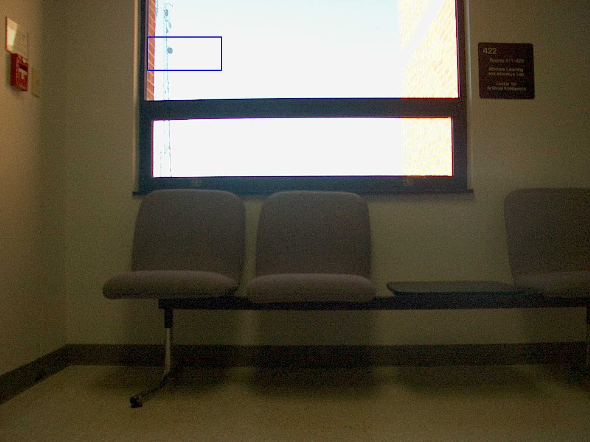
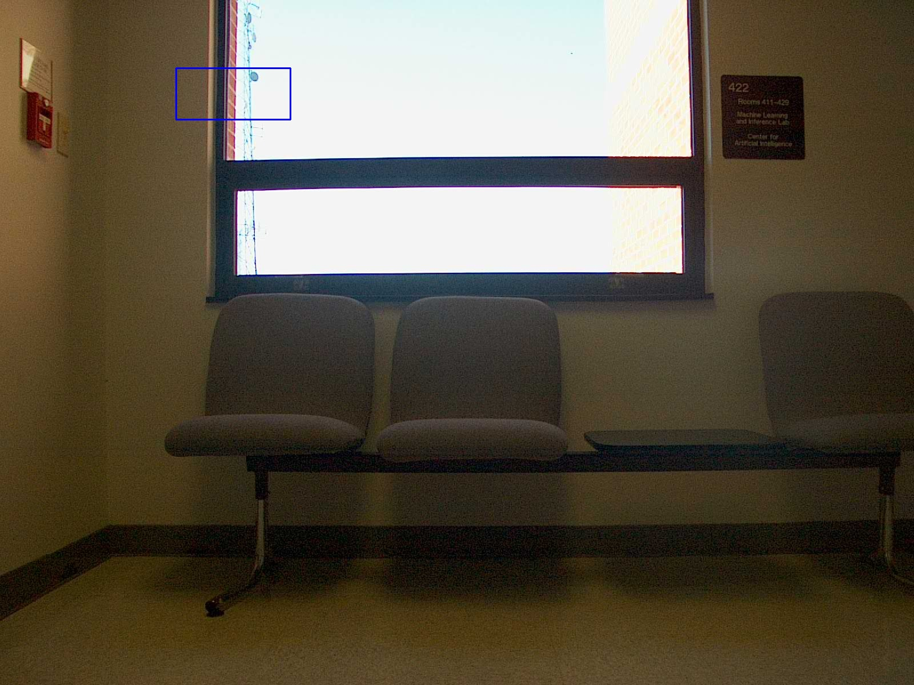
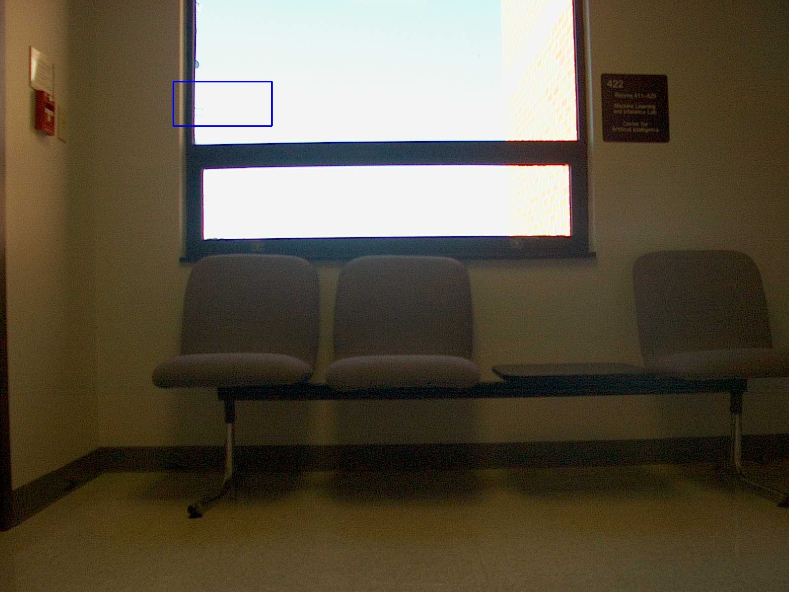
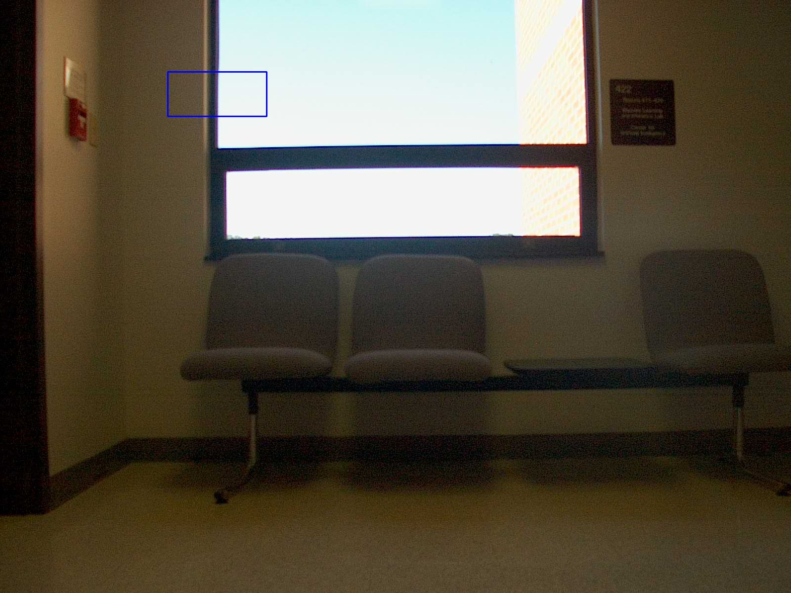

Midterm - Mean Shift Segmentation
meanshift.py
import cv2
import numpy as np
filepath = 'Project3/images/ST2MainHall4/'
r, h, c, w = 100, 90, 400, 200
track_window = (c, r, w, h)
frame = cv2.imread(filepath+'ST2MainHall4001.jpg')
x, y, w, h = track_window
imgs = ['ST2MainHall4002.jpg', 'ST2MainHall4003.jpg', 'ST2MainHall4004.jpg']
roi = frame[r:r+h, c:c+w]
hsv_roi = cv2.cvtColor(roi, cv2.COLOR_BGR2HSV)
mask = cv2.inRange(hsv_roi, np.array((0., 60., 32.)), np.array((180., 255., 255.)))
roi_hist = cv2.calcHist([hsv_roi], [0], mask, [180], [0, 180])
cv2.normalize(roi_hist, roi_hist, 0, 255, cv2.NORM_MINMAX)
term_crit = (cv2.TERM_CRITERIA_EPS | cv2.TERM_CRITERIA_COUNT, 10, 1 )
for i in imgs:
frame = cv2.imread(filepath+i)
hsv = cv2.cvtColor(frame, cv2.COLOR_BGR2HSV)
dst = cv2.calcBackProject([hsv], [0], roi_hist, [0, 180], 1)
ret, track_window = cv2.meanShift(dst, track_window, term_crit)
# redraw the window on the image
x, y, w, h = track_window
img2 = cv2.rectangle(frame, (x, y), (x+w, y+h), 255, 2)
cv2.imshow('ST2MainHall', img2)
k = cv2.waitKey(3600) & 0xff
if k == 27:
break
else:
cv2.imwrite("ms_"+i, img2)
cv2.destroyAllWindows()



